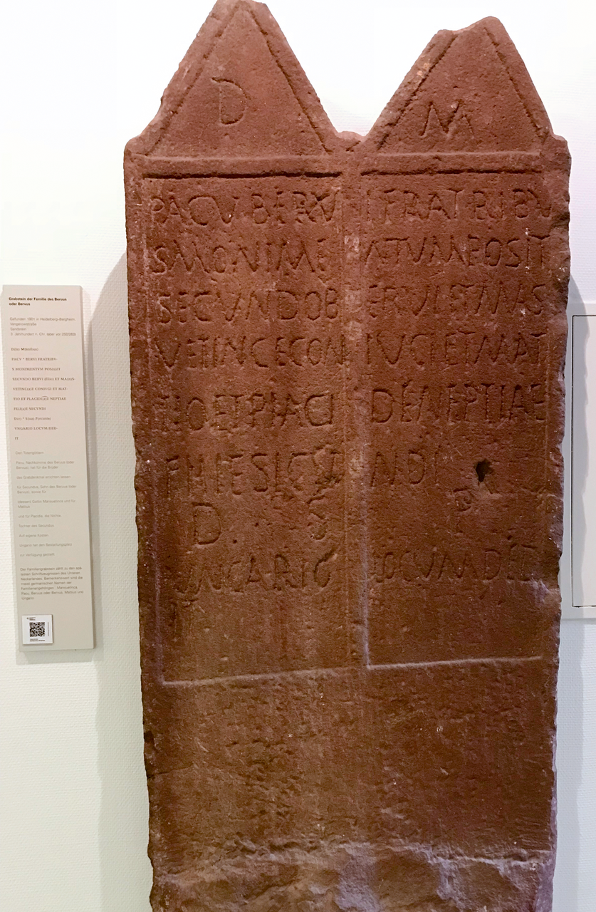

A Roman Tombstone from Heidelberg
Last month I spent some time in Heidelberg, Germany. While there, I participated in a meeting organized by the Heidelberger Akademie der Wissenschaften, which was focused on an initiative dubbed "epigraphy.info." I also got the chance to visit the Kurpfälzisches Museum, which has a collection of Roman artifacts excavated from the area of Heidelberg. I hope to write one or more extended blog posts about the meeting, the museum, and epigraphy.info (perhaps for Current Epigraphy), but in the meantime I thought I'd share one of the inscriptions in the museum collection.
This is Kurpfälzisches Museum inventory number HD-Ber 1993/8, an inscribed grave marker dated to the late second or early third century of the current era. The epitaph is written in Latin. It was found in 1901 in Heidelberg-Bergheim at the corner of Vangerowstraße and Kirchstraße where it had been reused in a late Merovingian stone-slab burial.

You can read more about this inscription in the places where I got the information sketched above:
- Witschel, Christian, Géza Alföldy, James Cowey, Francisca Feraudi-Gruénais, Brigitte Gräf, and Frank Grieshaber. Epigraphische Datenbank Heidelberg, 1997-. See HD031875.
- Feraudi-Gruénais, Francisca, and Renate Ludwig. Die Heidelberger Römersteine. Auswahlkatalog der römischen Steindenkmäler im kurpfälzischen Museum Heidelberg. Heidelberg: Universitätsverlag, 2017. Pages 80-81 (number 45). Find a copy via WorldCat.
Here's my rough go at a translation: